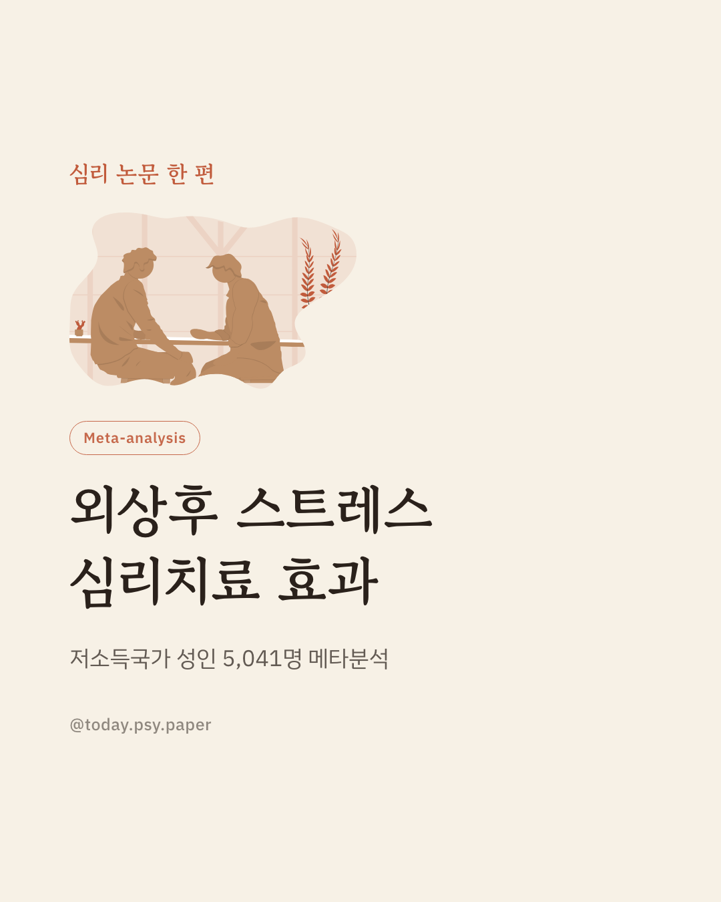
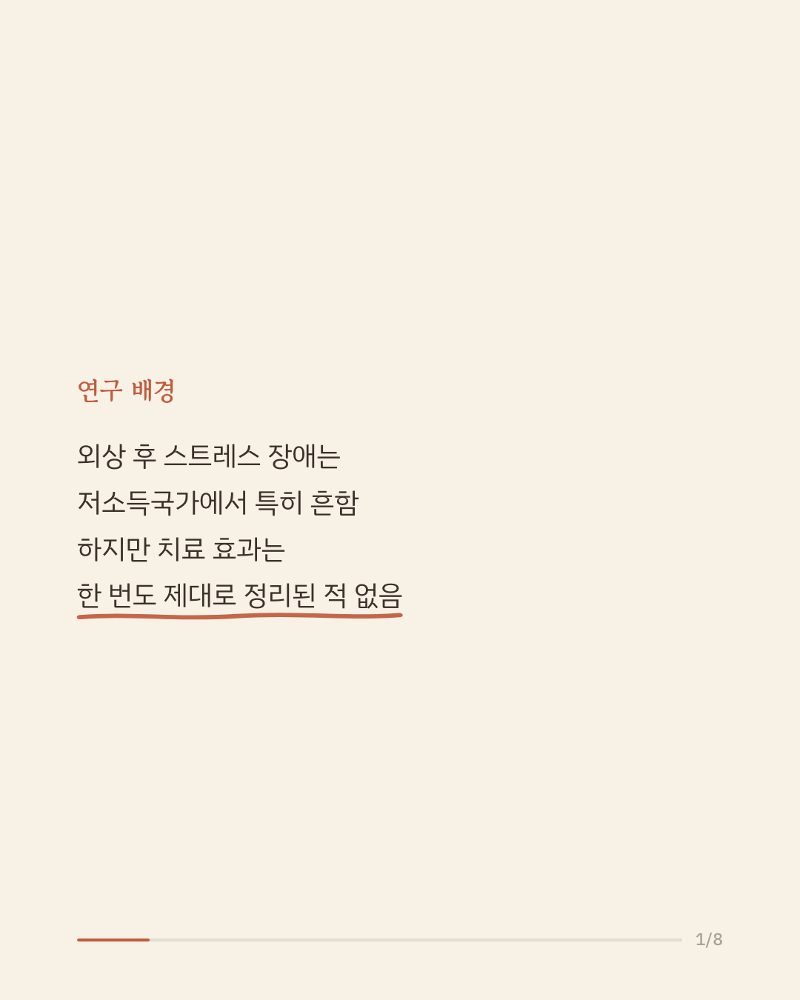
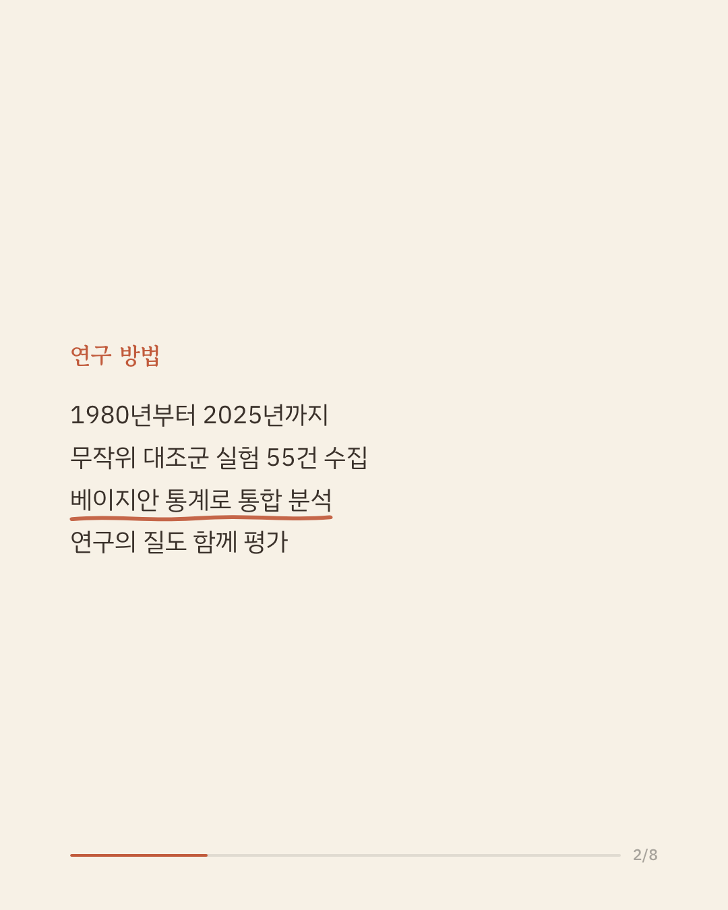
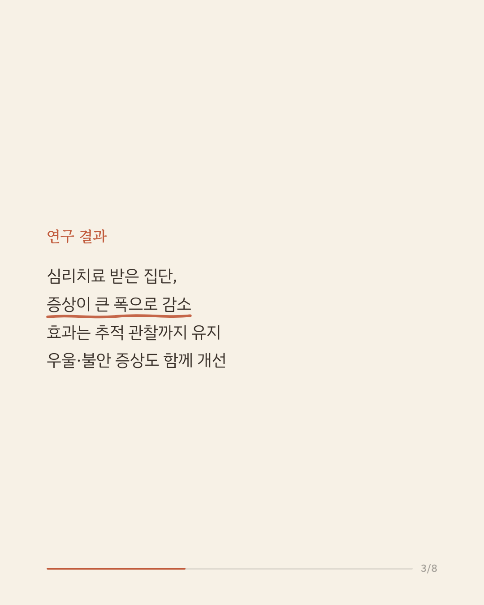
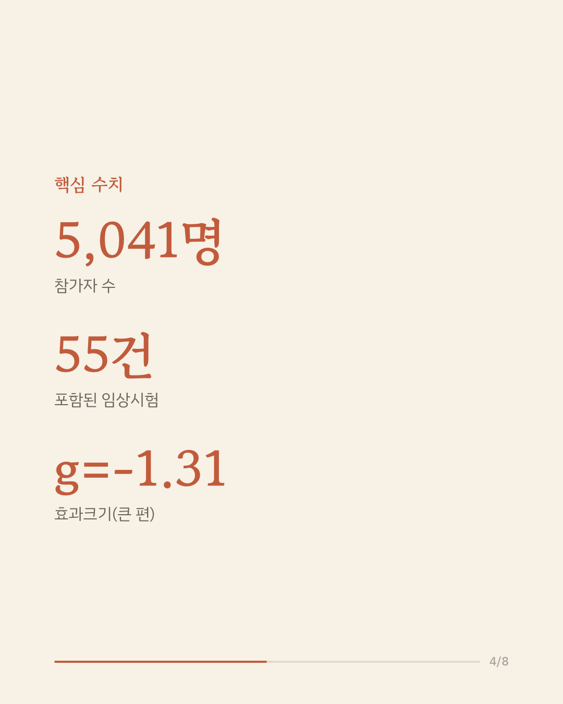
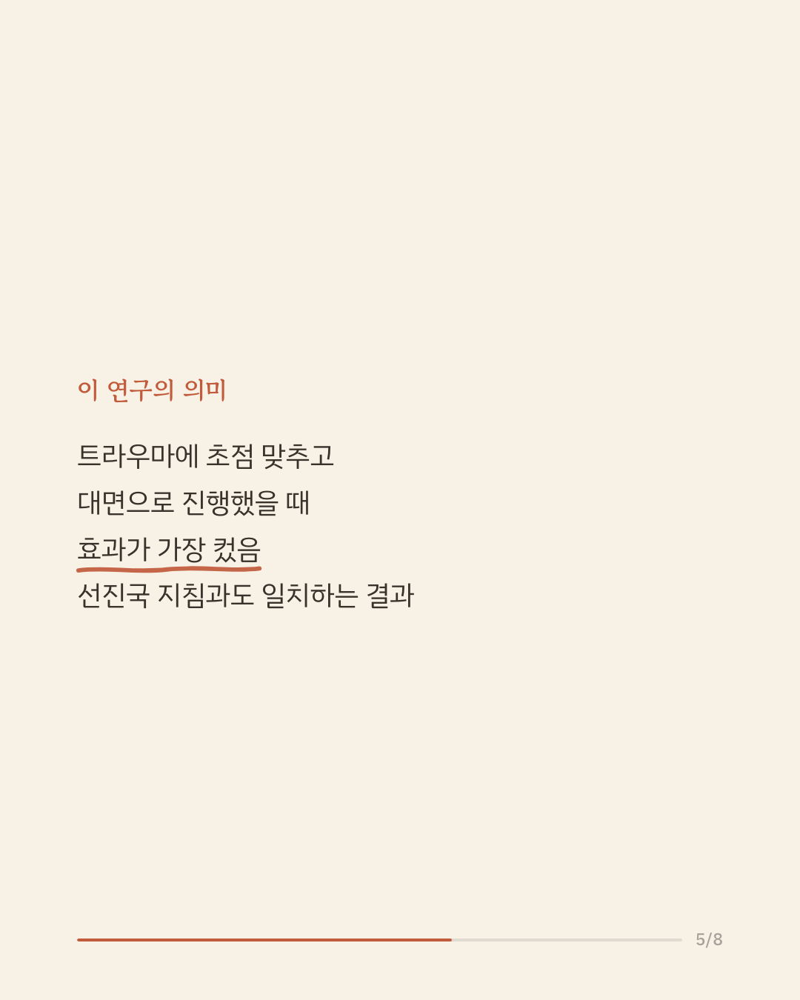
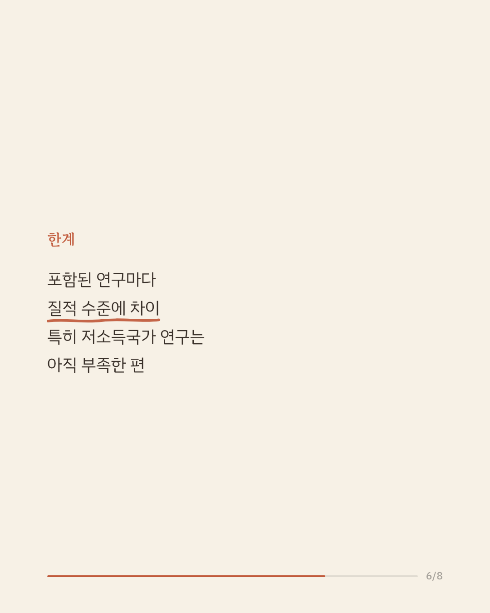
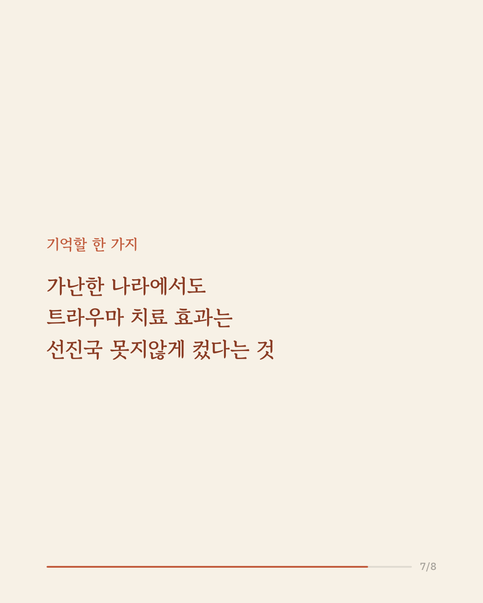
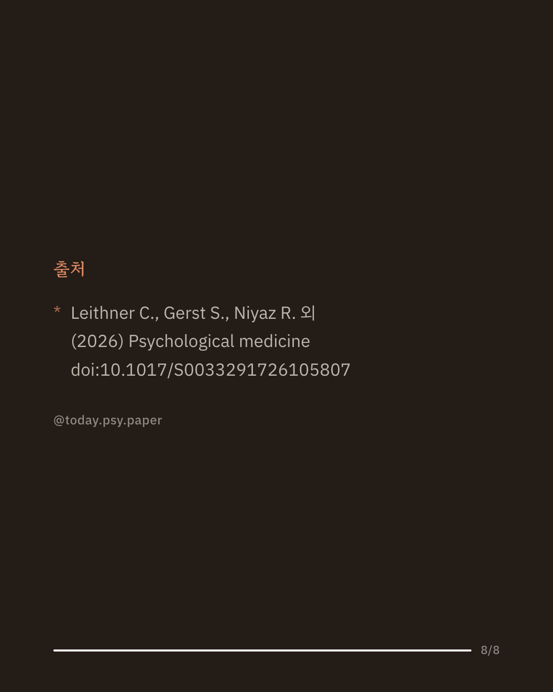

외상 후 스트레스 장애는 전쟁, 재난, 폭력 등을 겪은 후 나타날 수 있는 정신질환으로, 소득 수준이 낮은 국가에서도 드물지 않게 발생합니다. 하지만 이런 나라들에서 심리치료가 얼마나 효과적인지는 그동안 제대로 정리된 적이 없었습니다. 이번 연구는 저소득 및 중간소득 국가에서 이뤄진 무작위 대조군 실험 55건, 참가자 5,041명의 자료를 베이지안 메타분석으로 통합했습니다. 분석 결과 심리치료를 받은 집단은 그렇지 않은 집단보다 외상 후 스트레스 장애 증상이 큰 폭으로 줄었고, 이 효과는 치료가 끝난 뒤에도 유지되었습니다. 우울과 불안 증상 역시 함께 개선되었으며, 특히 트라우마에 초점을 맞춘 치료를 대면으로 진행했을 때, 그리고 참가자의 나이가 많을 때 효과가 더 컸습니다. 이 결과는 고소득국가의 임상 지침과 마찬가지로, 트라우마 중심 치료를 우선적으로 고려할 근거가 저소득 및 중간소득 국가에도 적용될 수 있음을 보여줍니다. 다만 포함된 연구마다 질적 수준에 차이가 있었고, 특히 저소득국가에서 이뤄진 고품질 연구는 아직 부족한 편입니다. 단일 연구이므로 확대 해석은 조심해야 합니다. 출처: Psychological Medicine (2026), 'Psychosocial interventions for posttraumatic stress disorder in low- and middle-income countries: a Bayesian meta-analysis' #임상심리 #정신건강정보 #심리학연구 #논문리뷰 #트라우마치료
python3 publish.py 42750363